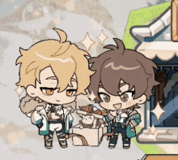

You survived this quiz :) Thank you for participating and please remember that Alexis (the creator of this quiz) is not responsible for any out-of-sorts content you may see when you search this game up. The name is Nu: Carnival. Thank you for playing!
Your prize for reaching the end is hearing me ramble about the characters because oh I love them so much all of them are so unique and lovable,,, Blade was my second SSR and I swear he's my favorite but don't get me wrong I love all the characters equally... Did you know I've been having a hard time pulling for the new character Rei and I have just been so sad about it like please come home you're so hot and Eiden will be so happy to ha- *gunshots*
Hello this is someone else taking over for Alexis. I stopped her before it's too late. Thank me later.